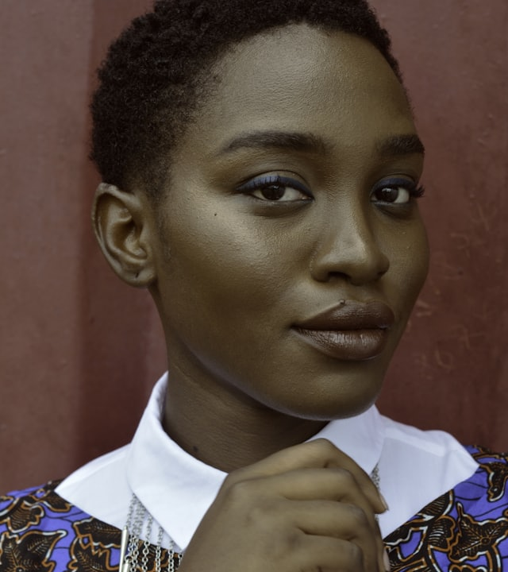

Meet the team
We're a focused,
outcomes-driven team
Engineers, data scientists and operations leads across four countries — building the autonomous agents that run live inside our clients' core systems.
Meet the team
Engineers, data scientists and operations leads across four countries — building the autonomous agents that run live inside our clients' core systems.